你打 我們 → 提示列
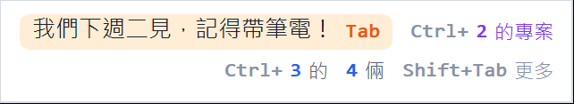
打觸發字
art → artifact、o5m → opus-5.5-medium，中文也行（「我們」→ 整句）。
快速詞排在提示列第一個，Tab 就是它。英文觸發字要在字的開頭才算：我art 算，start 不算。
Windows 的注音輸入法。中文、英文順著打，不用按切換鍵。注音打反、英文打錯一鍵、手滑多按一鍵， 都在同一次判斷裡處理掉，你不用回頭刪掉重打。
| 按鍵 | rup␣ | wu0␣ | k27 | deadline | ji3 | x96 | tj4 | e | xu3 |
|---|---|---|---|---|---|---|---|---|---|
| 注音 | ㄐㄧㄣ | ㄊㄧㄢ | ㄉㄜ˙ ↺ | 英文 | ㄨㄛˇ | ㄌㄞˊ | ㄔㄨˋ | 略過 | ㄌㄧˇ |
| 國字 | 今 | 天 | 的 | deadline | 我 | 來 | 處 | 理 |
k27，應該是 2k7），照樣出「的」。e 被認出來是手滑，略過。deadline 自己留在英文。這張表在修正模式裡隨時叫得出來，可以直接在上面改字。顏色只有這幾種意思，面板上到處都一樣，這一頁也照著用。
快速詞 0.11.0 測試版又加了三樣
常打的長字、型號、整句話，設一個自己記得住的觸發字。打到它，提示列最前面用橘色建議整段文字， 按 Tab 打出來、取代觸發字。不按，就照你打的。

art → artifact、o5m → opus-5.5-medium，中文也行（「我們」→ 整句）。
快速詞排在提示列第一個，Tab 就是它。英文觸發字要在字的開頭才算：我art 算，start 不算。
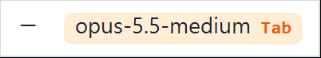
直接打那段文字的前 3 個字：opu → opus-5.5-medium、順打輸 → 整句。
只是提示，按 Tab 才換，不按就照你打的。要從一個字的開頭打起，黏在英文字母後面（gopus）不算。
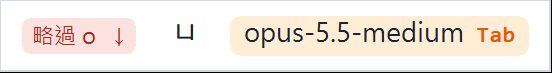
o5m 的 o 對注音來說是雜鍵，輸入法會說「略過 o ↓」。現在橘色的快速詞也一起出現：
Tab 打出快速詞，↓ 把 o 救回來，兩個都能用。
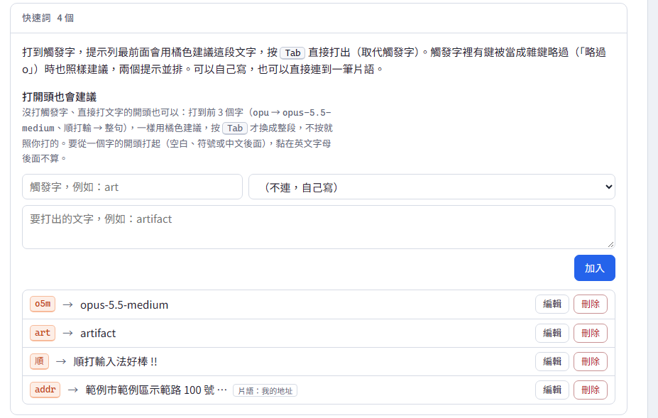
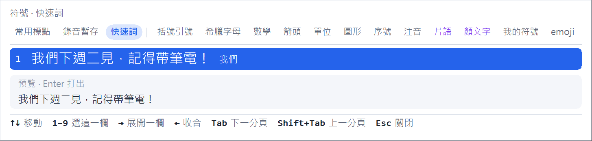
快速詞本身在正式版 0.10.1 就有了。標「新」的三樣在 0.11.0，目前還是測試版，下載按鈕拿到的是 0.10.1； 進度看版本紀錄。
為什麼再做一個注音輸入法
不用學新規則：中文照打、英文照打。打快了、打反了、手滑多按一鍵，它自己處理。
按住右 Ctrl 說話，放開就打在游標位置，聲音不會離開這台電腦。說過的話暫存在符號面板，切視窗太快也不會弄丟。筆電沒有右 Ctrl，可以改成左邊那個。
注音鍵順序顛倒（k27 → 的）、聲調打早（248 → 大）、忘了打聲調（clm/4 → 好用）照樣出字。英文打錯一鍵也會改好（wrold → world）。
快打時蹭到的鍵、同一鍵按兩下，都不會變成亂碼。提示列會說「略過 e」，按 ↓ 隨時救回來：要原樣的鍵、注音符號，或這個音的字都可以。
只從你明確的選擇學習。改錯字時連同前後文記成詞，下次同一句話就對了；同一個錯改到第二次，直接加進你的詞庫。你加的詞排在同音詞前面。
選字框停在那個詞上按 Delete：學過的詞忘掉，湊錯的組合（像「開新」）以後不會再湊在一起。也可以到設定頁的「自動收集」整批整理。
三種打法學到的東西互通，中英自動模式一次混用一種。改好的字，不會因為你改旁邊的字或按下標點又被換掉。
看它工作
下面的圖都是輸入法自己的繪圖程式和真的設定頁產生的，不是示意圖。
還沒成字的注音在左邊，右邊靠齊的是按 Tab 會接上的詞。右邊那一區位置固定，打字快的人可以整區無視它。
你自己的排在前面。建議分兩行：上面一行是橘色的快速詞和你打過的詞，下面一行才是詞庫原本的。
輸入法替你做了決定時也在這裡說一聲：紅色是略過了一個鍵，琥珀色是把打錯一鍵的英文字改好了，按 ↓ 都能改回原樣。
沒話說的時候它縮成「● Enter 送出」，提醒你這段字還沒送出去。按標點時送出的就是畫面上的字，不會在按下去的那一瞬間又變。
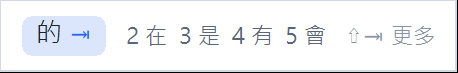
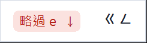
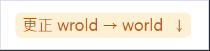
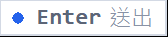
我的詞庫 → 學過 → 詞庫 → 其他讀法 → 原始按鍵 → 注音，由近到遠。Tab 在上面那排分類籤之間走，一眼跳過整個不想要的群組；→ 把下一頁開在旁邊。
1–9 直接選，數字鍵盤不管 NumLock 開不開都能用。
右上角寫著現在在第幾頁，不在第 1 頁時用藍底標出來。Home 一下回到第 1 頁，最常用的詞都在那裡。
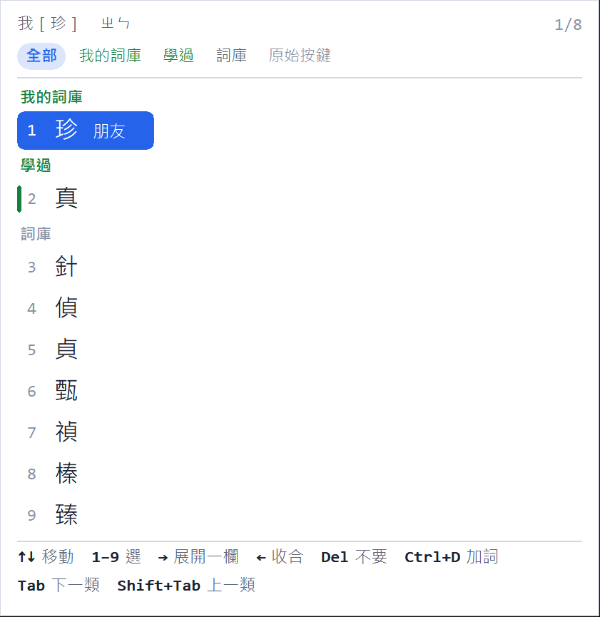
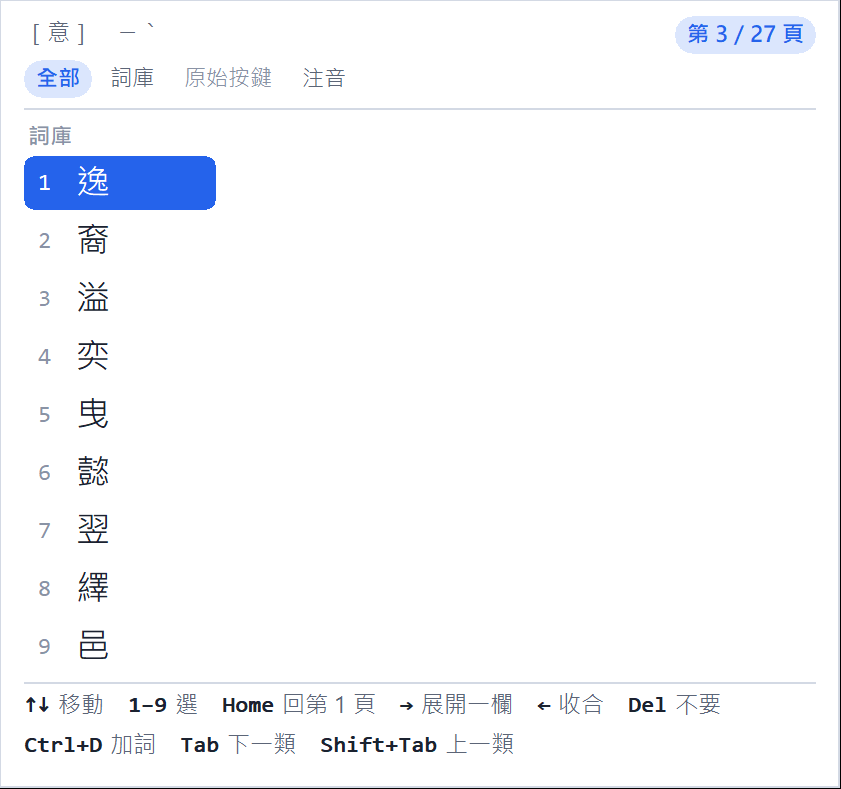
打出來的 mvp 想換成「勳」，或是被判成中文的想換回原始按鍵，都在同一個候選窗裡。任何一次誤判都離正確答案一個 ↓。
想直接打注音也行：最後一組「注音」把這個字或整段中文換成注音（你好 → ㄋㄧˇㄏㄠˇ）。修正模式裡按 z，一個字一個字換，再按一次換回國字。
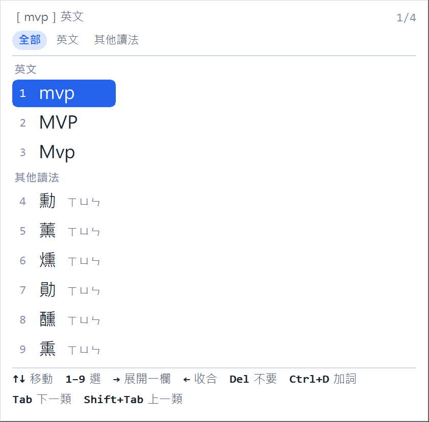
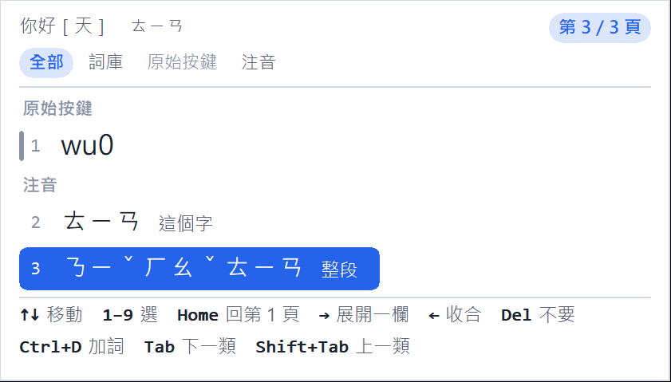
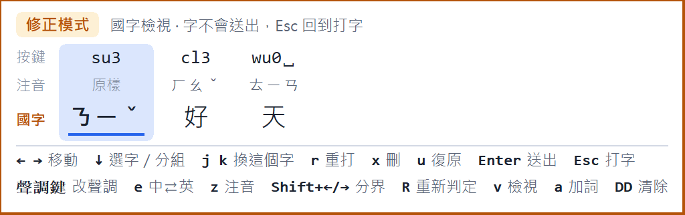
組字中按 Esc，鍵盤變成指令。← → 移動（英文整個字一格）、↓ 選字、j k 只換游標上的字、r 重打、Esc 回去打字。只有明確的指令會離開，其他鍵都不會不小心打出字。
英文或數字跟中文黏在一起（games以、10284）時，↓ 直接列出其他分法（game｜你、10｜大），也可以用 Shift+← → 自己推分界。
設定頁的「練習場」會帶你把這些親手做一次。
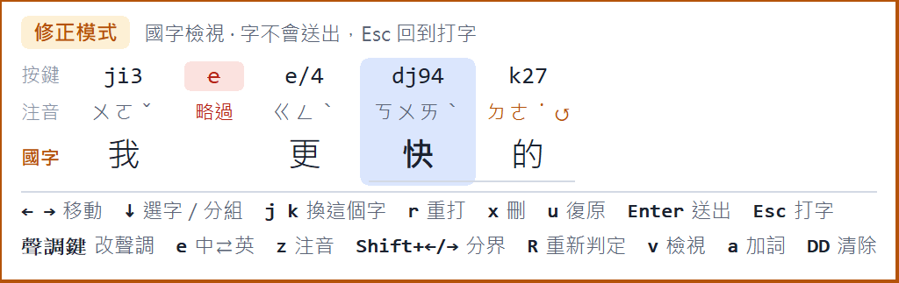
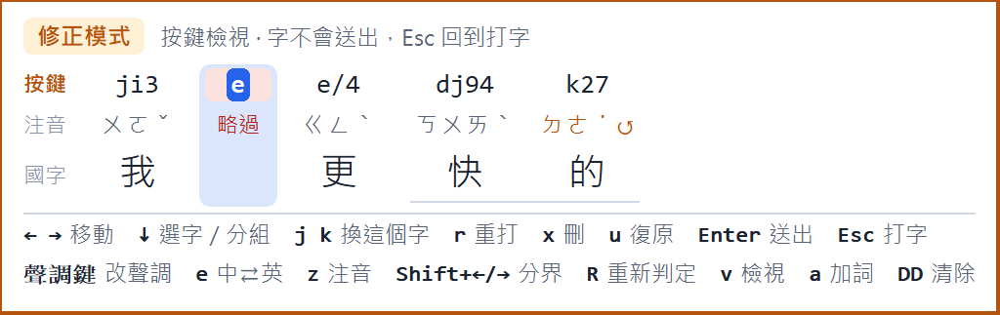
連打兩個冒號 :: 就開符號面板，Tab 換到括號、希臘字母、數學、箭頭、單位、顏文字、emoji。也可以單按一下 Ctrl 打開（預設右邊，可改左邊或關掉），沒在打字時也一樣。
連打兩個分號 ;; 叫出自己存的罐頭訊息，可以接關鍵字（;;addr），選中時先預覽全文再打出去。
兩個都不用記熱鍵，也不會在英文詞中間誤觸：C++ 的 std::vector 照常打得出來。
前三頁是單按 Ctrl 最常要的：常用標點、錄音暫存（語音說過的話由新到舊列在這裡，選一下再打一次）和快速詞。
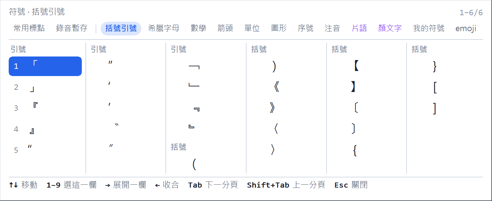
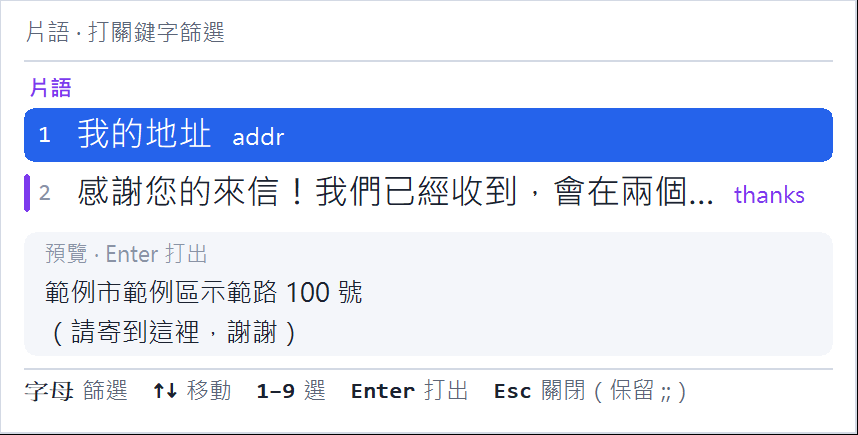
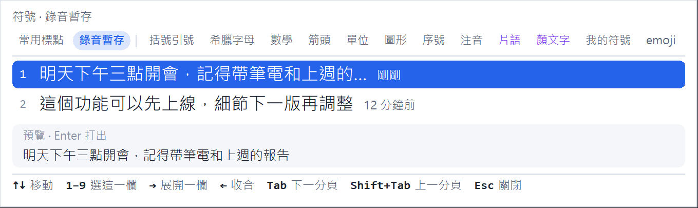
每種打字方式一張卡片。標點有完整的「每個鍵 × 四種按法」對照表，每一格都能改。我的詞庫分成「自動收集」和「整理過的」兩區，每個詞都能直接改字、改注音。
每個設定只放在一個地方，別頁提到它時是一個連結，按了就跳過去。
資料全部在 %APPDATA%\SmartIME，可以匯出帶到別台電腦（合併，不會覆蓋）。
從開始功能表「順打輸入法 設定」打開，或系統匣圖示按右鍵。
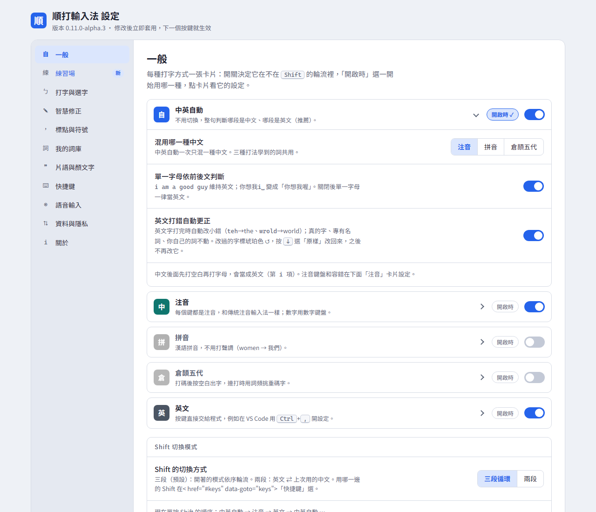
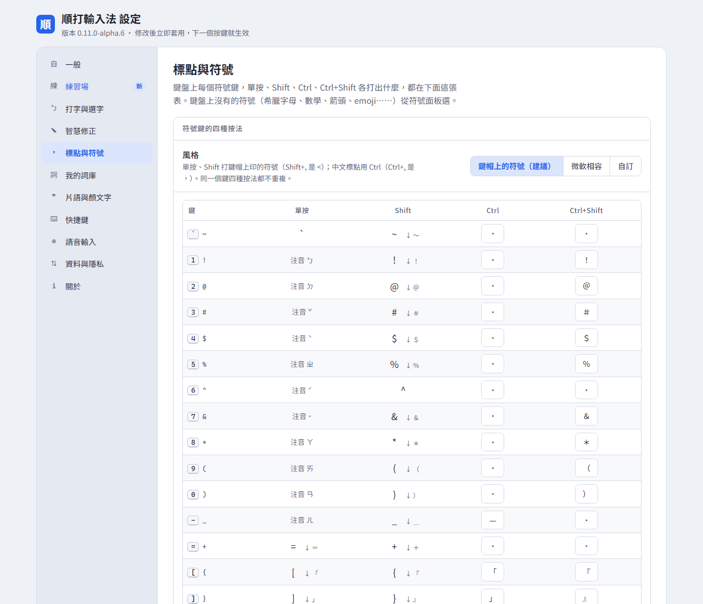
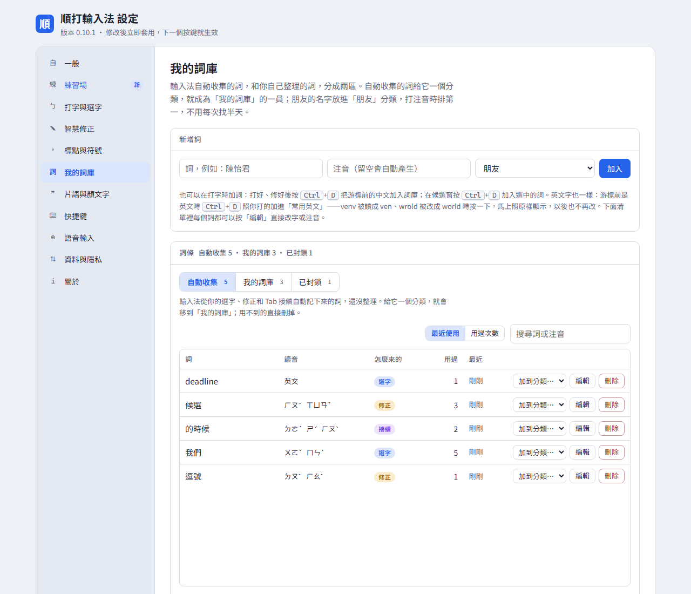
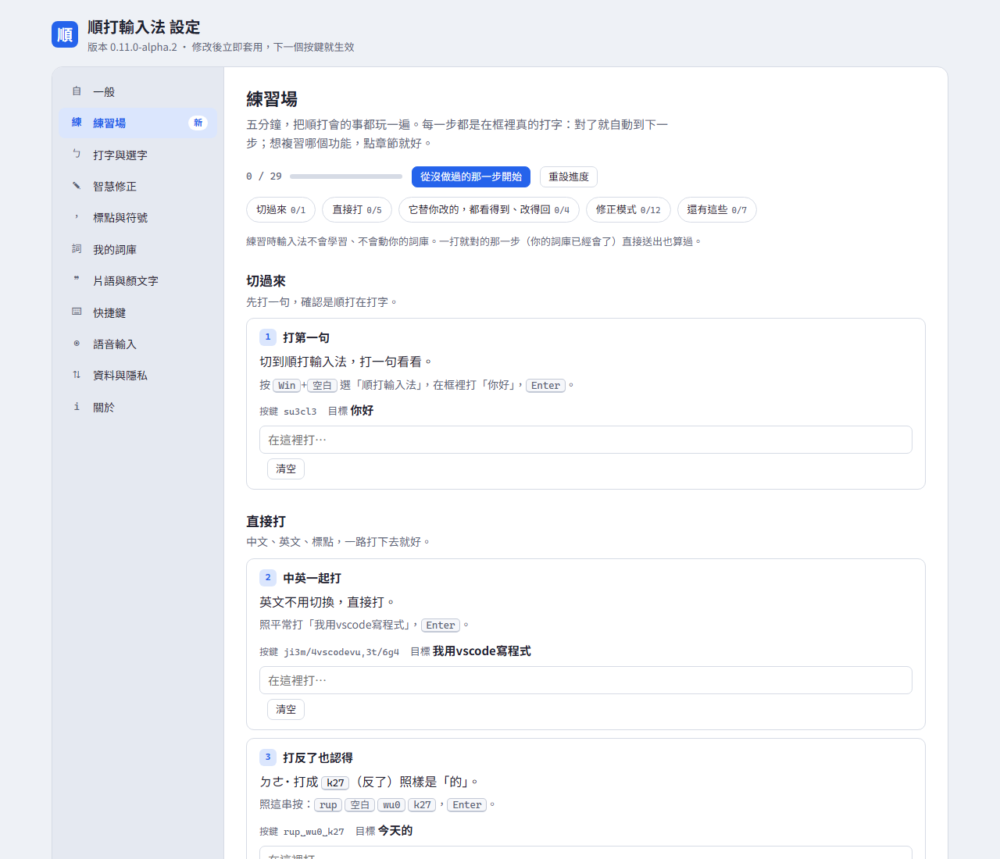
你的字留在你這裡
你打的字不上傳。語音也是本機辨識，聲音不會離開這台電腦。安裝不需要網路；唯一會連網的是每週檢查一次新版本（問 GitHub 有沒有新版），可以關掉。
Apache-2.0 授權，原始碼都在 GitHub。解碼器怎麼想、為什麼這樣設計，架構文件裡寫著。
設定、我的詞庫、學習記憶都在 %APPDATA%\SmartIME。安裝和移除不會動到它，匯出檔可以帶到別台電腦合併。
它只從你明確的選擇學習，學到什麼都看得到，學錯了一個 Delete 就刪掉。
安裝
檔名是 ShundaIME-Setup-<版本>.exe，會跳出系統管理員權限確認。安裝檔還沒有數位簽章，Windows 可能顯示「已保護您的電腦」：按「其他資訊」→「仍要執行」。
註冊輸入法、加進語言清單，最後自動打字測試一次。輸入法建在 PIME 框架上，安裝檔只帶 PIME 的核心，不會多出新酷音等其他輸入法。
切到「順打輸入法」就能打。完成頁勾著「開啟練習場」：五分鐘的導覽，每個功能親手試一次，對了就自動到下一步。
%APPDATA%\SmartIME，不會被刪。給工程師
每一次按鍵都把整個組字區重新解碼一遍，而不是逐字決定。「這段鍵是中文還是英文」「這幾個鍵是哪個音節」「這個鍵是不是手滑」 放在同一個評分裡比較，所以順序打反、多按、中英誤判才有機會一起修好。
權重全部收在 decoder.Weights，改動必須讓 tests/test_typing_corpus.py（使用者真實鍵盤紀錄）保持綠燈。
內部代號是 smartime，改名時刻意不動，舊版的設定與記憶都能沿用。
src/smartime/engine/ | 輸入引擎，純標準函式庫：注音、鍵盤配置、詞庫、使用者詞庫、解碼器、session、修正模式、符號 |
src/smartime/pime/ | PIME 後端協定（stdin/stdout JSON）與 text service 轉接 |
src/smartime/ui/ | 輸入法自己畫的面板（GDI）：提示列、解碼面板、分組候選窗 |
src/smartime/settings/ | 設定頁：本機 HTTP 伺服器 + 網頁介面 |
src/smartime/voice/ | 語音輸入：按住 Ctrl（右或左）錄音、本機辨識（獨立行程） |
src/smartime/devtools/ | 模擬器、實機打字測試、面板截圖，重現 bug 回報的工具都在這 |
tools/ · installer/ | 建詞庫、產生安裝檔（Inno Setup）、版本號、文件圖片 |
文件
正式版 0.10.1，Windows 10 / 11。免費、開源，打的字不離開這台電腦。